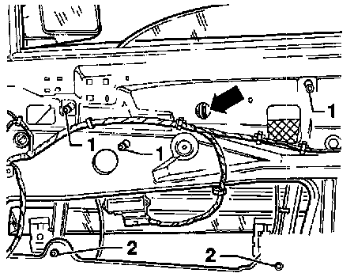

Regulator Removal/Installation

- Remove Door Window.
- Remove cable clip (arrow).
- Loosen hex-head screws -1- and -2-.
- Lift window regulator slightly so that hex-head screws -1- can be pulled through installation openings.
- Pull window regulator out downward through installation opening.
- Install in reverse order of removal.
- Tightening torque (screws -2-): 10 Nm (7 ft lb)